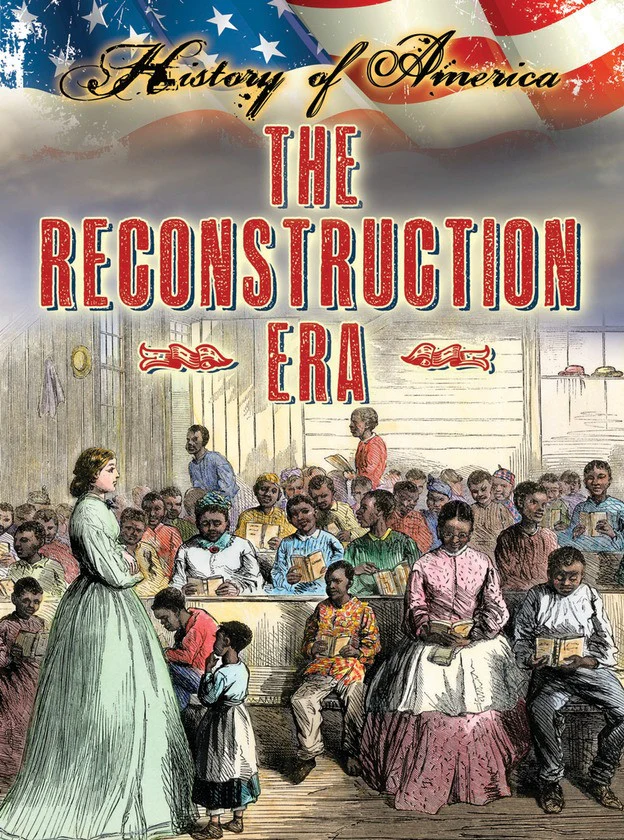

Historical Perspective
Though unpopular in his time, Johnson’s presidency is now studied for its impact on Reconstruction and executive power.Major Accomplishments: 13th Amendment: Johnson oversaw the passage of the 13th Amendment, which abolished slavery in the United States. Alaska Purchase: He facilitated the purchase of Alaska from Russia in 1867, a key expansion for the U.S.
